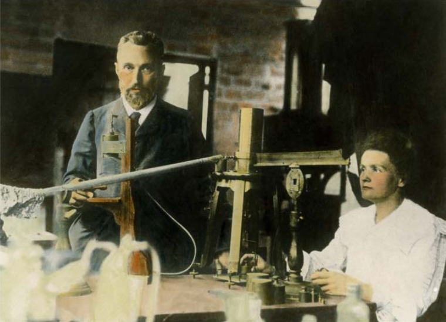

Rozdział III: Wojny i Upadek Rzeczypospolitej
▉ Odkrycia i nagrody
Rezultatem badań prowadzonych przez państwa Curie było odkrycie dwóch nieznanych wcześniej pierwiastków chemicznych. Pierwszy z nich został nazwany przez Marię polonem - na cześć jej ojczyzny - Polski. Drugi z pierwiastków - rad - okazała się niezwykle przydatny w medycynie. Wytwarza on promieniowanie, dzięki któremu możłiwe jest leczenie ludzi chorych na raka.
W 1903 roku Maria i Piotr otrzymali za swoje odkrycia Nagrodę Nobla z fizyki. Po tragicznej śmierci Piotra w 1906 roku Maria objeła po nim funkcję wykładowcy, czyli nauczyciela szkoły wyższej, na Sorbonie. Została tym samym pierwszą kobietą profesorem na tym słynnym uniwersytecie. Oprócz wykładów nadal prowadziła pracę naukową. W 1911 roku ponownie została laureatką Nagrody Nobla, tym razem w dziedzinie chemii.
▉ Poświęcenie dla nauki
Przez wiele lat Maria Sklodowska-Curie prowadziła badania nad pierwiastkami, które wydzielają szkodliwe promieniowanie. Miało ono bardzo zły wpływ na jej zdrowie i ostatecznie stało się przyczyną śmierci uczonej. Maria Skłodowska-Curie zmarła w 1934 roku. W uznaniu dla zasług państwa Curie w 1995 roku szczątki Marii i Piotra złożono w paryskim Panteoniem imponującej budowli, w której spoczuwają wybitne osoby szczególnie zasłużone dla Francji. Maria Sklodowska-Curie jest jedyną kobietą, którą uhonorowano przez pochowanie w tym miejscu. Do dziś polska uczona uznawana jest za jedyną z najwybitniejszych kobiet w historii.
| CIEKAWOSTKA |
|---|
| Nagrodą Nobla została uhonorowana także córka Piotra i Marii - Irena Joliot-Curie [czytaj: żolio-kiri] oraz jej mąż. W1935 roku otrzymali oni to wyróżnienie w dziedzinie chemii. |
Praca w labolatorium zajmowała Marii i Piotrowi wiele czasu. Naukowcy musieli wielokrotnie powtarzać eksperymenty, aby potwierdzić swoje założenia. Pracowali przy tym w warunkach szkodliwych dla zdrowia.
| CIEKAWOSTKA |
|---|
| W 1916 roku Maria Sklodowska-Curie uzyskała prawo jazdy. Była jedną z pierwszych kobiet w Europie, które miały uprawnienia do prowadzenia auta. |